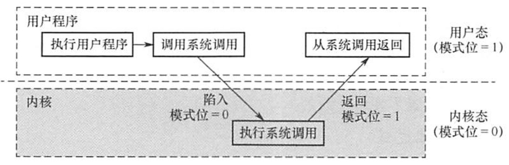

2022.05.21
特权指令：不允许用户直接使用的指令
I/O指令、置中断指令、存取用户内存保护的寄存器、送程序状态字到程序状态字寄存器指令、切换到用户态指令...
非特权指令：允许用户直接使用的指令
切换到核心态指令...
用户态（目态）
核心态（管态、内核态）
内核 = 底层{时钟管理，中断管理，设备驱动..} + 其余{进程管理，存储器管理，设备管理...}
原语：最底层，原子性，运行时间短，调用频繁
系统调用类别，略
运行流程

（）是操作系统必须提供的功能。 A. 图形用户界面 (GUT) C.中断处理 B. 为进程提供系统调用命今 D.编译源程序
答案：C，中断！
计算机区分核心态和用户态指令后，从核心态到用户态的转换是由操作系统程序执行后 完成的，而用户态到核心态的转换则是由（）完成的。 A.硬件 B. 核心态程序 C. 用户程序 D.中断处理程序
计算机通过硬件中断机制完成由用户态到核心态的转换。B 显然不正确，核心态程序只有在操作系统进入核心态后才可以执行。D中的中断处理程序一般也在核心态执行，因此无法完成“转换成核心态”这一任务。若由用户程序将操作系统由用户态转换到核心态，则用户程序中就可使用核心态指令，这就会威胁到计算机的安全，所以C 不正确。 计算机通过硬件完成操作系统由用户态到核心态的转换，这是通过中断机制水实现的。发生中断事件时（有可能是用户程序发出的系统调用），触发中断，硬件中断机制将计算机状态置为核心态。
【2012 统考真题】下列选项中，不可能在用户态发生的事件是（）。 A.系统调用 B. 外部中断 C.进程切换 D.缺页
答案：C
【2012 统考真题】中断处理和子程序调用都需要压栈以保护现场，中断处理一定会保存 而子程序调用不需要保存其内容的是（）。 A. 程序计数器 B. 程序状态字寄存器 C.通用数据奇存器 D.通用地址寄存器
答案：C
【2015 统考真题】处理外部中断时，应该由操作系统保存的是（）。 A程序计数器（PC）的内容 B. 通用寄存器的内容 C. 块表（TLB）中的内容 D. Cache 中的内容
答案：B
【2018統考真题】定时器产生时钟中断后，由时钟中断服务程序更新的部分内容是(）。
A.仅工2 B. 仅江1 C. 仅1，3 D. 1，2，3
答案：D
2020统考真题】下列与中断相关的操作中，由操作系统完成的是（）。
当 CPU 检测到中断信号后，由硬件自动保存被中断程序的断点(即程序计数器PC)，I错误。之后，硬件找到该中断信号对应的中断向量，中断向量指明中断服务程序入口地址 （各中断向量统一存放在中断向量表中，该表由操作系统初始化，IIl 正确)。接下来开始执行中断服务程序，保存 PSW、保存中断屏蔽字、保存各通用寄存器的值，并提供与中断信号对应的中断服务，中断服务程序属于操作系统内核，II和IV正确。答案：D